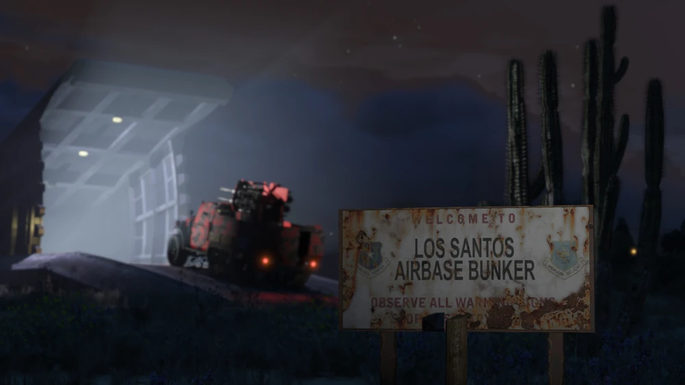

Bunker
O Bunker é um dos negócios de produção e venda mais antigos e mais rentáveis de GTA Online. Foi introduzido na atualização Gunrunning e é considerado a melhor fonte de renda passiva de alto valor no jogo, especialmente para pesquisa e desbloqueio de upgrades militares.
Metodo de Obter:
Você pode comprar um Bunker no Maze Bank Foreclosures, que você pode acessar pelo navegador da Internet no seu smartphone. O site pode ser encontrado na aba Dinheiro e Serviços ou inserindo o seguinte URL no seu navegador: www.maze-bankforeclosures.com.
No total, existem 11 Bunkers disponíveis para compra em diferentes regiões do mapa.
O preço dos Bunkers varia bastante dependendo da localização.
- Paleto Forest : $ 1.165.000
- Route 68 : $ 1.950.000
- Grand Senora Desert : $ 2.120.000
- Smoke Tree Road : $ 2.200.000
- Thomson Scrapyard : $ 2.290.000
- Farmhouse : $ 2.375.000
- Richman Glen : $ 2.415.000
Melhorias
Estas melhorias são cruciais para maximizar a lucratividade e eficiência do seu Bunker. Sem elas, a produção será muito lenta e o lucro será mínimo.
- Melhoria de Equipamento: $ 1.155.000
- Melhoria de Pessoal: $ 598.500
- Segurança : $ 351.000
- Transporte de Golfe : $85.000 - $ 265.000
- Acomodações Privadas : $ 283.500
Aumenta a velocidade de produção e o valor final do produto
Aumenta a velocidade de produção em 25% adicionais, sendo essencial para otimizar os lucros.
Reduz a chance de ataques de NPCs, mas não afeta a produção nem o lucro(E ainda acontecera ataques na sua propriedade).
Para se mover dentro do Bunker (puramente cosmético).
Permite definir o Bunker como seu ponto de spawn
Lucro
O Bunker tem duas funções principais: fabricação de armas e pesquisa de upgrades.
1. Produção de Armas (Lucro Principal)
- Processo: É um negócio de motociclista (MC) disfarçado. Requer Suprimentos para produzir Estoque.
- Gestão: Você pode roubar Suprimentos (grátis) ou comprá-los (pago). Comprar é o método passivo ideal.
- Manutenção (Custo Gasto): Uma compra total de Suprimentos custa $ 75.000.
- Produção Otimizada: Leva cerca de 11 horas e 40 minutos no jogo (cerca de 16 horas na vida real) para encher o estoque.
2. Pesquisa
- Desbloqueios: Permite desbloquear upgrades valiosos para armas e veículos militares (Ex: mísseis teleguiados do Oppressor Mk II ou munição explosiva).
- Configuração: Você pode configurar o pessoal para apenas Pesquisa, apenas Produção ou dividir entre os dois.
3. Vendas e Lucro
As vendas do Bunker são geralmente feitas com múltiplos veículos se o estoque for muito grande, sendo mais seguro vender $ 175.000 (valor que garante um único veículo de entrega).
- Bônus de Venda: Vendas para Los Santos (o destino mais distante) rendem um bônus de 50%.
- Bônus de Sessão: Sessões públicas oferecem um bônus adicional de Alta Demanda (até 25%).
O Bunker é um negócio de configuração simples (comprar suprimentos, esperar e vender). É excelente para jogadores que desejam uma renda consistente e é obrigatório para qualquer jogador que queira acessar a gama completa de upgrades militares do jogo.
Assista a este guia para saber mais sobre. Este vídeo explica como funciona o esquema e como gerenciar.
l